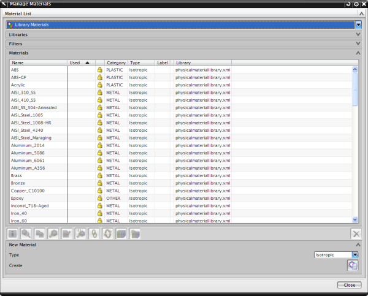

求解器将在计算惯量时使用材料的质量密度。除非您对对象指派特定的材料，否则运动仿真都将使用默认密度值。
管理材料对话框让您创建和管理新的材料
指派材料对话框让您将材料应用到机构中的实体
运动仿真将继承您在建模应用模块中指派给主模型装配的任何材料。

NX 将使用列在用户默认设置中的默认密度值，通常来说，这个值是 0.2829 lbs/in3 或者 7.83 kg/mm3(亦即钢的密度)
要确定默认密度，在建模应用模块中选择首选项→建模。